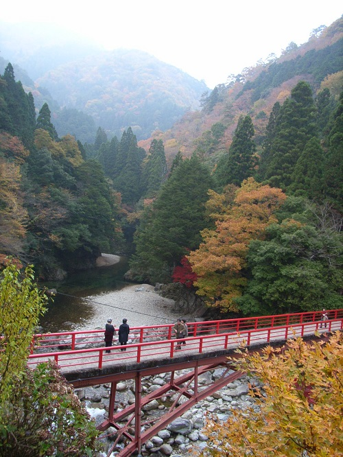
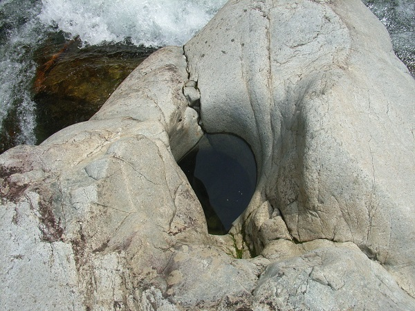

<!-- saved from url=(0022)http://internet.e-mail -->
<!DOCTYPE HTML PUBLIC "-//W3C//DTD HTML 4.01 Transitional//EN">
<HTML>
<HEAD>
<META http-equiv="Content-Type" content="text/html; charset=Shift_JIS">
<META name="GENERATOR" content="IBM WebSphere Homepage Builder V6.0.0 for Windows">
<META http-equiv="Content-Style-Type" content="text/css">
<title>三段峡ホテル／ハナ</title>
<BASE target="RWIN">
<SCRIPT type="text/javascript">

  var _gaq = _gaq || [];
  _gaq.push(['_setAccount', 'UA-29367320-1']);
  _gaq.push(['_trackPageview']);

  (function() {
    var ga = document.createElement('script'); ga.type = 'text/javascript'; ga.async = true;
    ga.src = ('https:' == document.location.protocol ? 'https://ssl' : 'http://www') + '.google-analytics.com/ga.js';
    var s = document.getElementsByTagName('script')[0]; s.parentNode.insertBefore(ga, s);
  })();
                                 
    <tr>     
        <td width="100%">&nbsp;　</td>    
    </tr>    
    <tr>    
        <td align="center" width="100%" bgcolor="#004000"><font    
        color="#FFFFFF" size="6"><strong><u><a name="植物情報">三段峡の花</a></u></strong></font></td>    
    </tr>    
    <tr>    
        <td width="100%">　</td>    
    </tr>    
</table>    
</center></div>
<div align="center"><center>
<TABLE border="0" cellpadding="0" cellspacing="0" width="550" height="1482">    
    <tr><td colspan="2"><font size="5" color="#008000"><strong><font size="5" color="#008000">■西中国山地国定公園　特別名勝　</font><B><FONT size="6" color="#008000" face="ＤＦ特太ゴシック体"><FONT size="7" color="#008000" face="HG行書体"><FONT size="7" color="#008000" face="HG行書体">三段峡</FONT></FONT></FONT></B><font color="#008000" size="3"><br>
      </font><FONT size="4" color="#cc00cc"><FONT color="#cc00cc"><B><FONT size="4" color="#000000">三段峡は全長１６キロにも及ぶ柴木川（太田川上流）の雄大な断崖や瀑布などの連続する日本に五つしかない特別名勝の渓谷です。<BR>
      </FONT><FONT size="4" color="#cc0000">春は、2000種の草木の新緑美<BR>
      夏は、渓谷と原生林から吹き出る天然ｸｰﾗｰ<BR>
      秋は、色彩られる紅葉<BR>
      冬は、入り口から見える水墨画の世界</FONT><FONT size="3" color="#000000"><BR>
      <BR>
      </FONT></B></FONT><FONT color="#cc00cc" size="3"><FONT size="3"><B><FONT size="4" color="#000000">【三段峡の楽しみかた】<BR>
      </FONT></B></FONT></FONT><FONT color="#cc00cc" size="4"><FONT size="4"><B><FONT size="4" color="#000000">三段峡の魅力はなんと言っても渓谷美です。中でも三段峡正面口から黒淵を通り猿飛、二段滝へとつづく渓谷沿いの遊歩道をゆっくり渓谷美を見ながらの散策は、心を癒してくれます。<BR>
      </FONT></B></FONT><FONT size="4" color="#cc0000"><FONT size="4" color="#cc0000"><B>　中でも<font size="5" color="#008000"><FONT size="4" color="#cc00cc"><FONT color="#cc0000"><FONT size="4">入口から黒淵までの3キロに及ぶ散歩道</FONT></FONT></FONT></font>は景勝地では味わえない<font size="5" color="#008000"><FONT size="4" color="#cc00cc"><FONT color="#cc0000"><FONT size="4">三段峡の魅力</FONT></FONT></FONT></font>です。この３キロは、滝、淵、断崖、大小の岩岩、原生林の森が柴木川に沿って連続的に様々な景観となって次々と展開しています。</B></FONT></FONT></FONT><FONT color="#cc00cc"><B><BR>
      　　<BR>
      　</B></FONT><FONT color="#000000"><FONT color="#000000"><B>往復２０分ｺｰｽ　　ゆっくり歩いて入口←→竜の口<BR>
      　往復１時間ｺｰｽ　　ゆっくり歩いて入口<font size="5" color="#008000"><FONT size="4" color="#cc00cc"><FONT color="#000000">←→</FONT></FONT></font>石樋<BR>
      　</B></FONT><FONT color="#cc0000"><FONT color="#cc0000"><B>往復２時間ｺｰｽ　　ゆっくり歩いて入口<font size="5" color="#008000"><FONT size="4" color="#cc00cc"><FONT color="#000000">←→</FONT></FONT></font>黒淵</B></FONT></FONT><FONT color="#000000"><B><BR>
      　楽な一日ｺｰｽ　　入口<font size="5" color="#008000"><FONT size="4" color="#cc00cc"><FONT color="#000000">→</FONT></FONT></font>定期バスで出合<font size="5" color="#008000"><FONT size="4" color="#cc00cc"><FONT color="#000000">→</FONT></FONT></font>歩いて猿飛二段滝、<BR>
      　　　　　　　　　　　三段滝<font size="5" color="#008000"><FONT size="4" color="#cc00cc"><FONT color="#000000">→</FONT></FONT></font>出合から定期バス<font size="5" color="#008000"><FONT size="4" color="#cc00cc"><FONT color="#000000">→</FONT></FONT></font>入口<BR>
      　１日ｺｰｽ　　　　　歩いて入口<font size="5" color="#008000"><FONT size="4" color="#cc00cc"><FONT color="#000000">→</FONT></FONT></font>竜の口<font size="5" color="#008000"><FONT size="4" color="#cc00cc"><FONT color="#000000">→</FONT></FONT></font>石樋<font size="5" color="#008000"><FONT size="4" color="#cc00cc"><FONT color="#000000">→</FONT></FONT></font>黒淵<font size="5" color="#008000"><FONT size="4" color="#cc00cc"><FONT color="#000000">→</FONT></FONT></font><BR>
      　　　　　　　　　　　猿飛二段滝<font size="5" color="#008000"><FONT size="4" color="#cc00cc"><FONT color="#000000">→</FONT></FONT></font>三段滝<font size="5" color="#008000"><FONT size="4" color="#cc00cc"><FONT color="#000000">→</FONT></FONT></font><FONT size="4" color="#000000"><FONT color="#000000">出合から定期バス<font size="5" color="#008000"><FONT size="4" color="#cc00cc"><FONT color="#000000">→</FONT></FONT></font>入口<BR>
      </FONT></FONT>　　<font size="5" color="#008000"><FONT size="4" color="#cc00cc"><FONT color="#000000">（健脚）</FONT></FONT></font>　　　　　　　　　　　　　　　　　<font size="5" color="#008000"><FONT size="4" color="#cc00cc"><FONT color="#000000"><FONT color="#cc0000"><font size="5" color="#008000"><FONT size="4" color="#cc00cc"><FONT color="#000000">←</FONT></FONT></font></FONT></FONT></FONT></font>（あるいは歩いて入口まで）<BR>
      </B></FONT></FONT></FONT><FONT size="4" color="#000000"><BR>
      中国地方の木の種類のすべてが見られる秘境。ｵｵﾙﾘをはじめ多種類の鳥、まばゆいばかりの新緑、厳しい冷え込みのため彩られる美しい紅葉。これらに接することで、都会のストレスはすっかり忘れてしまうでしょう。</FONT></strong></font><BR>
      <BR>
      <BR>
      <BR>
      <BR>
      </td>
    </tr>

    <tr>
        <td valign="top" align="right"></td>    
        <td valign="top"><font size="4" color="#008000"><strong>長淵</strong></font><font color="#008000" size="3">（ながぶち）</font><p><FONT size="+1">三段峡ガイド物語は、ここ三段峡正面口、長淵から始まる。<BR>
      　大正６年４月２３日、三段峡の大開発者、熊南峰の第一歩もこの長淵から、<BR>
      　そして大正１４年の国の名勝指定、昭和２８年の国の特別名勝指定へと続くが、物語は始まったばかり、その話はづっと後まわし、まずは自然の観察から。<BR>
      　昭和６３年の大洪水以降長淵は随分浅くなったが、それ以前は川の手前に岩の飛び込み台があった。現在土砂に埋もれいる。淵は土砂で遮られることなく、長く長く続いていた。長淵であった。<BR>
      </FONT></td>
    </tr>
  <tr>
        <td valign="top" align="right"><BR>
      </td>    
        <td valign="top"><font size="4" color="#008000"><strong>かがすばち</strong></font>
      <p><FONT size="+1">長淵をしばらく行くと遊歩道のすぐ上に千坪ほどの平地があり、昔寺が建っていたところだと「寺原」と呼ばれている。その前の河を寺が瀬といい、淵をかがす淵、そこには「かがすばち」という名のポットホールがあり、大人一人がすっぽりと入る大きさである。すぐ上流には蝙蝠岩がある。<BR>
      </FONT></td>
    </tr>

    
      
      
      
      
      
      
      
      
      
      
      
      
      
      
      
      
      
      
      
      
      
      
      
      
      
      
        
        </TR>
  </TABLE>
</center></div>
</body>
</HTML></SCRIPT></HEAD>
</HTML>